Bem-Querer
uma V2 da collab havaianas ♥ FARM Rio · conceito
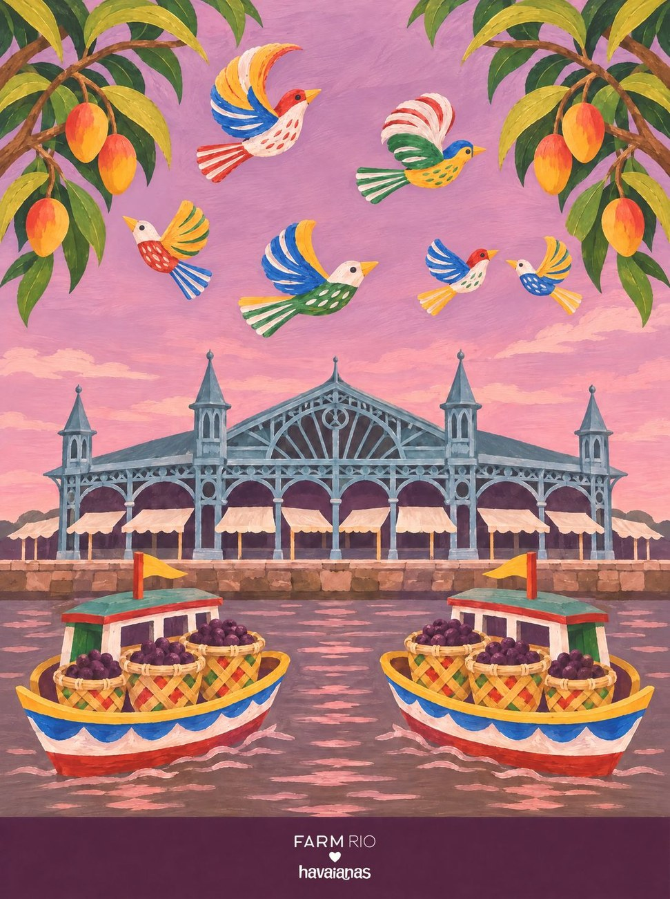

uma V2 da collab havaianas ♥ FARM Rio · conceito

a ideia
A gente saiu do Rio e foi até quatorze estados. Em cada um, um par de chinelos feito com os elementos de lá, e um coração que só aparece na segunda olhada.
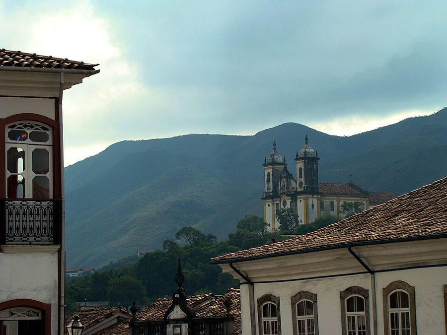
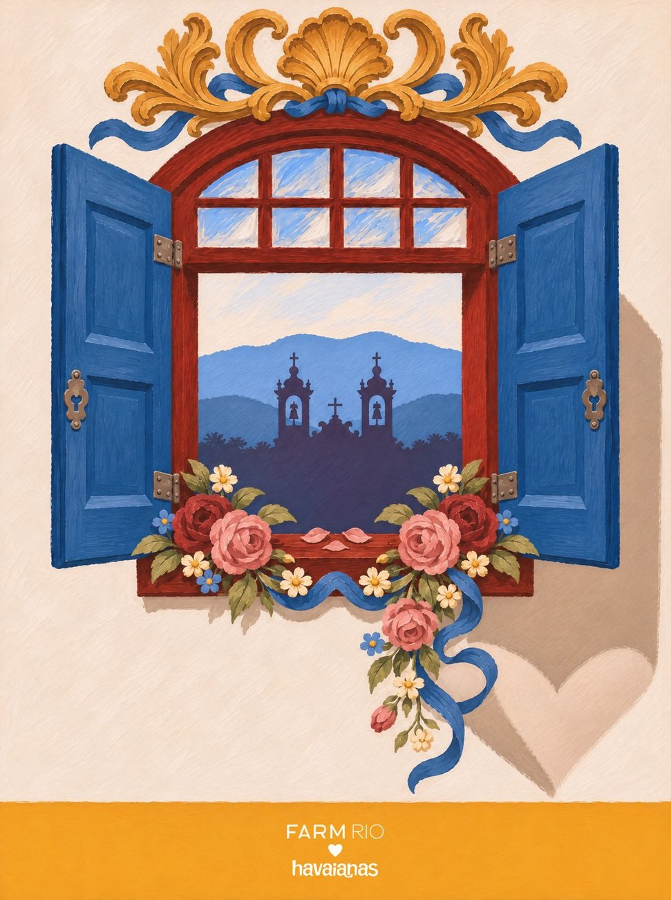
Cada estado começou por fotos reais do lugar, com autor e local conferidos. São 312 fotos de 139 fotógrafos.
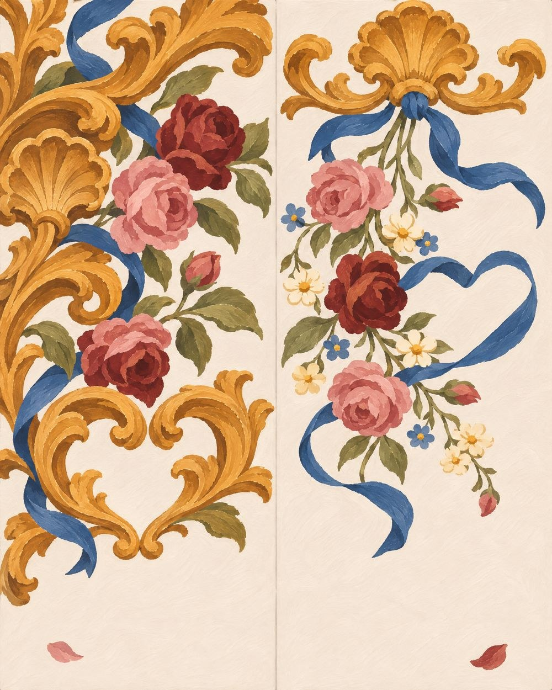
O pé esquerdo e o direito contam metades da mesma cena. Em Minas: a talha dourada de um lado, a guirlanda de rosas do outro.
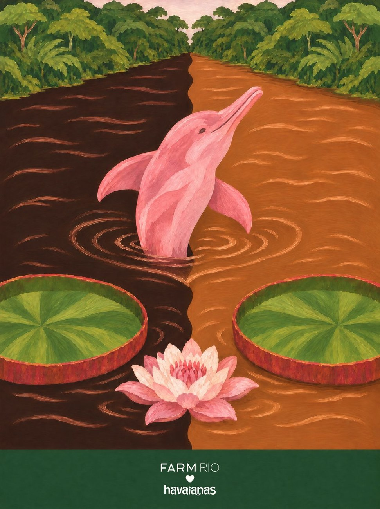
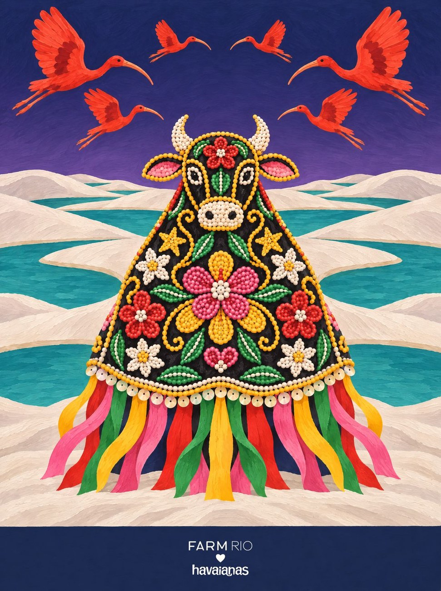
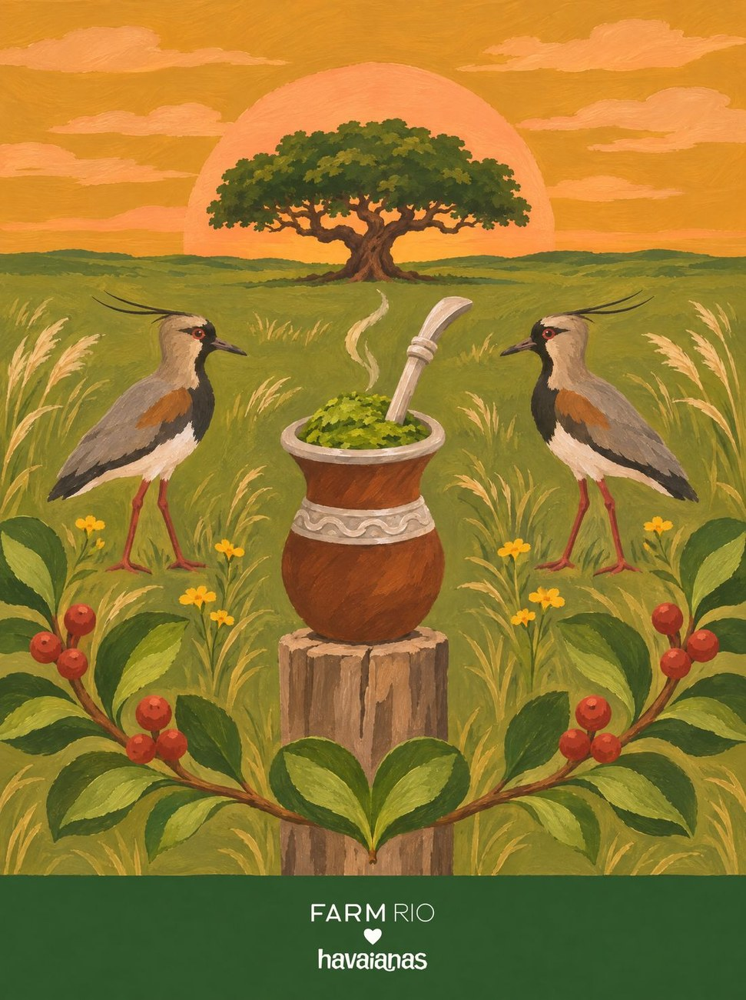
Rio, mercado, duna, pampa: cada estado tem uma cena própria, escolhida pelo que é dele e de nenhum outro.
08 / 14 · Norte
Revoada de Miriti
Os brinquedos de miriti são dos artesãos de Abaetetuba. Numa coleção de verdade, eles entrariam em parceria, com crédito no nome. O Círio fica de fora: é devoção.
o coração: dois pássaros de miriti que voam um para o outro
10 / 14 · Centro-Oeste
Onça de Bonito
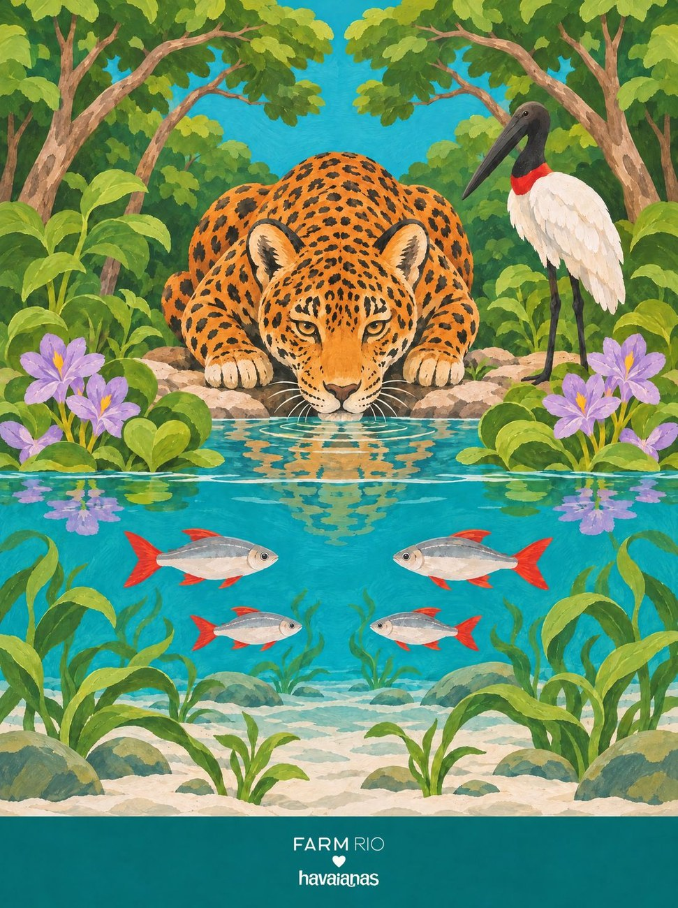

o coração: uma folha de aguapé na beira do rio de Bonito
13 / 14 · Sul
Baleia e Ostra
Garopaba já foi armação baleeira. Desde 1987 a caça é proibida no Brasil, e hoje a baleia-franca volta todo inverno para ter filhote, vista da areia. A tarrafa secando na praia é a da pesca artesanal.
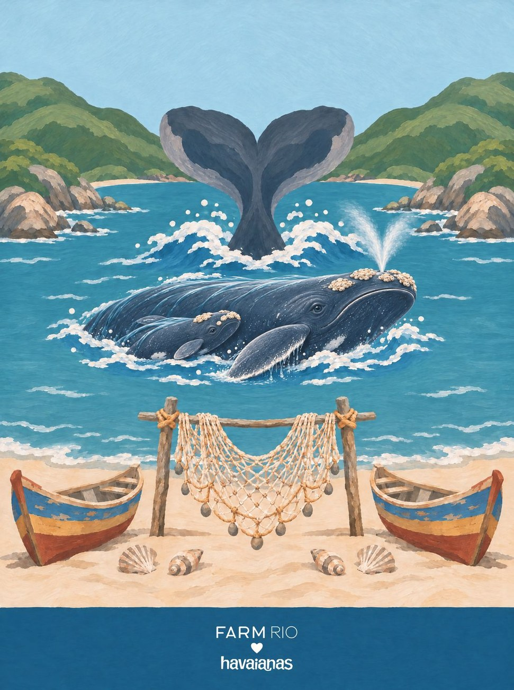
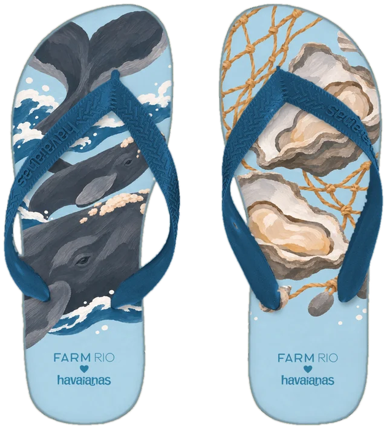
o coração: a cauda da baleia-franca na enseada de Garopaba
Em cada estampa tem um, escondido. Procure antes de passar.
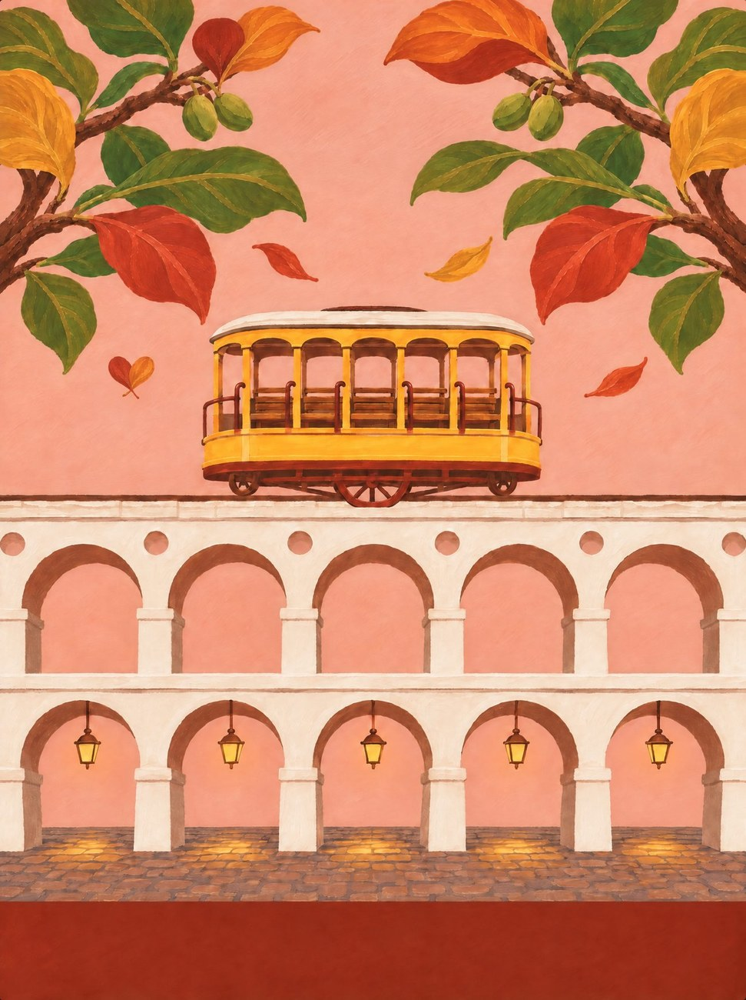
Duas folhas de amendoeira caindo juntas, ao lado do bonde. Ele não foi desenhado: são os próprios elementos que formam o coração.
 Minas Gerais
Minas Gerais Rio de Janeiro
Rio de Janeiro Bahia
Bahia Pernambuco
Pernambuco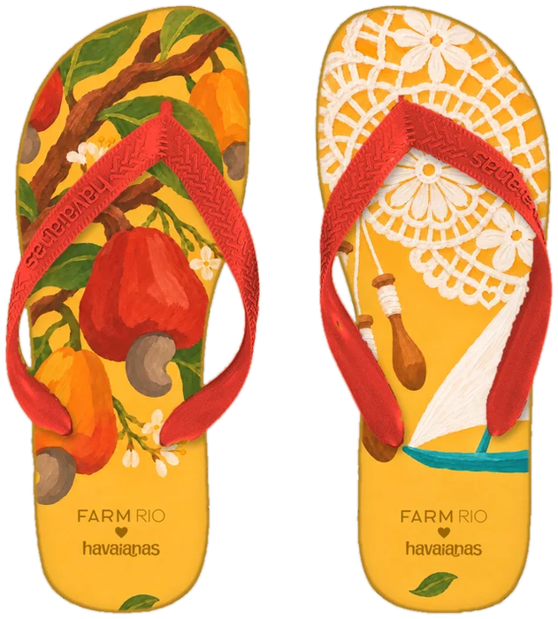
Ceará Maranhão
Maranhão AmazonasPará
AmazonasPará TocantinsMato Grosso do Sul
TocantinsMato Grosso do Sul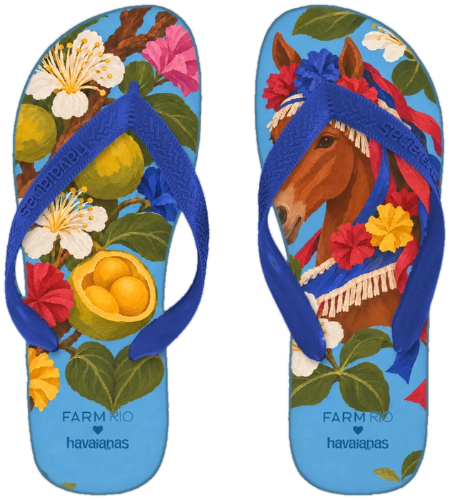
Goiás Paraná
Paraná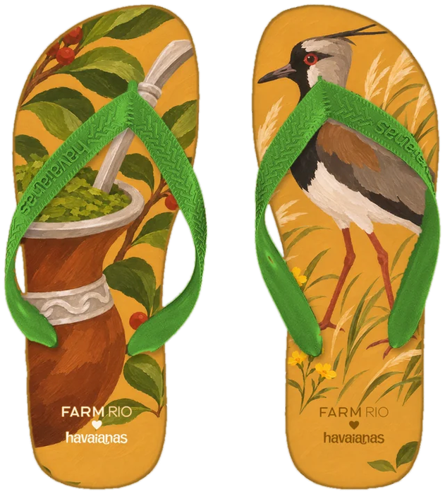
Rio Grande do SulFolha, bicho, fruta e objeto de cada lugar, grandes e recortados pela borda da palmilha, como a FARM já faz. A assinatura da collab vai no calcanhar.
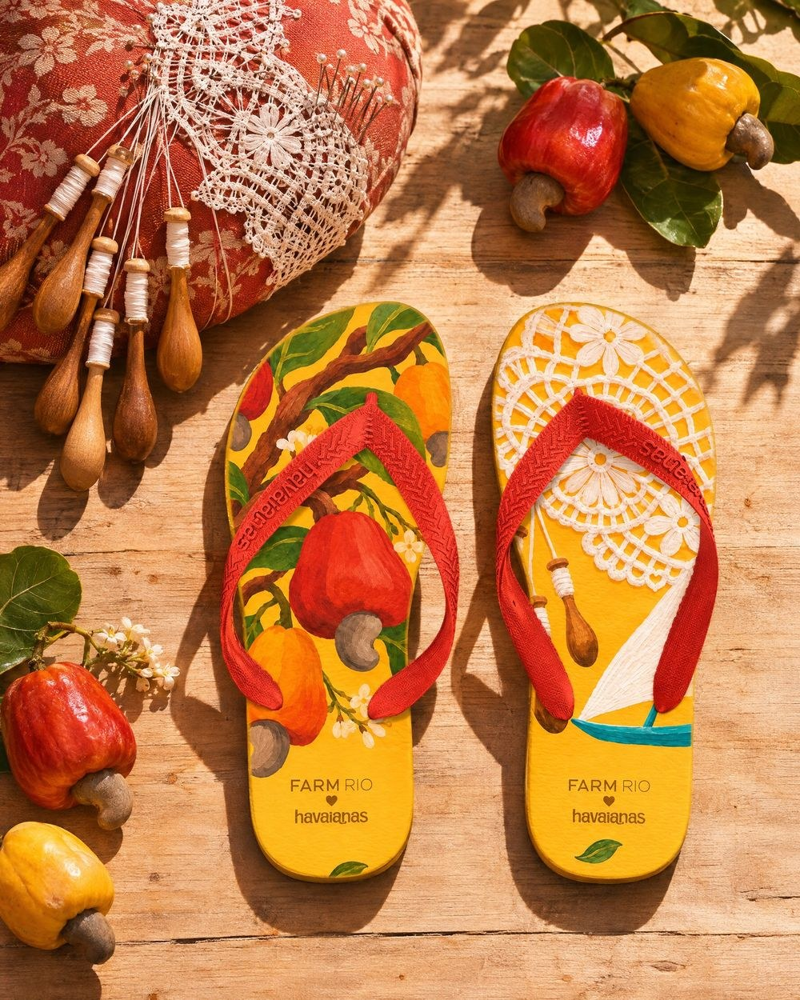
a campanha
Cada par foi fotografado onde a arte acontece. O Ceará, na areia, entre o caju e a renda.
bem-querer
O projeto completo, estado por estado, está no site: cauadorn.github.io/Dornizon-
Ficha Conceito, pesquisa e direção de arte: Emilly Silva. Imagens e motions gerados com IA, sob essa direção de arte.
Fotos de campo 139 fotógrafos, sob licenças Creative Commons, com crédito completo no site.
Aviso Projeto conceitual de portfólio. Não é uma coleção oficial e não tem vínculo com a FARM Rio nem com a havaianas.